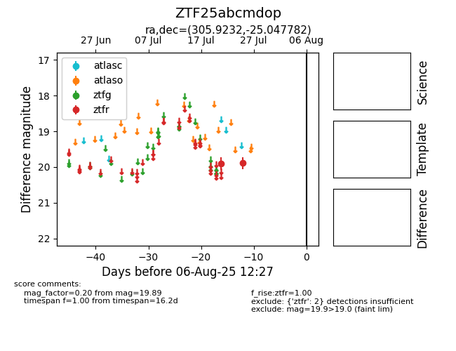

Target ZTF25abcmdop at 2025-08-06 17:27, see:
FINK: fink-portal.org/ZTF25abcmdop
Lasair: lasair-ztf.lsst.ac.uk/objects/ZTF25abcmdop
ALeRCE: alerce.online/object/ZTF25abcmdop
alt names
ZTF25abcmdop (ztf,fink)
coordinates:
equatorial (ra, dec) = (305.9232,-25.04778)
galactic (l, b) = (18.4709,-30.59184)
photometry
last ztfr=19.89
2 ztfr detections
